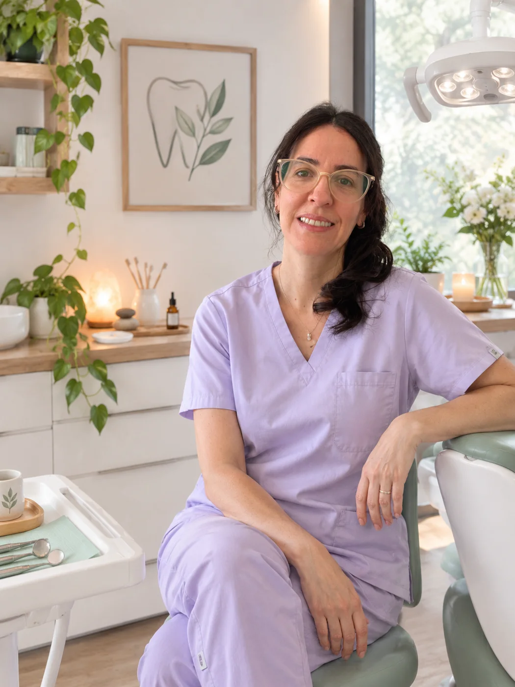

Odontología integrativa una visión sistémica más allá de la boca
Un recorrido desde los fundamentos y el pensamiento crítico hasta los mecanismos biológicos, las relaciones entre la boca y el organismo, y su aplicación en la práctica clínica.
Fundamentos
Los avances en la integración biológica con las ciencias biomédicas han ampliado la comprensión de la relación entre la salud oral y el resto del organismo. La cavidad oral constituye un ecosistema dinámico, influenciado por factores locales, sistémicos, ambientales y propios de cada individuo.
En este contexto, la odontología integrativa propone ampliar la mirada clínica, incorporando conocimientos y fundamentos biológicos relacionados con el funcionamiento de nuestro organismo en su totalidad. La boca no está separada del resto del cuerpo.
Esta formación busca integrar estos conocimientos a la práctica odontológica, promoviendo el pensamiento crítico, la interpretación de la evidencia científica y una atención personalizada, preventiva y fundamentada en la biomedicina.
Tu cursada, en detalle
Una formación en vivo para llevar la mirada integrativa a tu práctica clínica.
- Fecha de inicio
- Jueves 18/02/2027
- Horario
- 19 a 21 hs
- Duración
- 7 clases de 2 hs cada una
- Modalidad
- 100% virtual en vivo y con clases grabadas
Precio del curso
$628.000
Hasta 3 cuotas sin interés
20% de descuento por transferencia
$500.000
Beneficio de lanzamiento
Durante noviembre30% de descuento abonando únicamente por transferencia
$450.000
Una mirada clínica integrativa
Comprender la salud oral en su contexto permite formular mejores preguntas, interpretar la evidencia con criterio y tomar decisiones clínicas más informadas.
